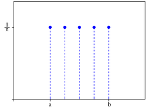
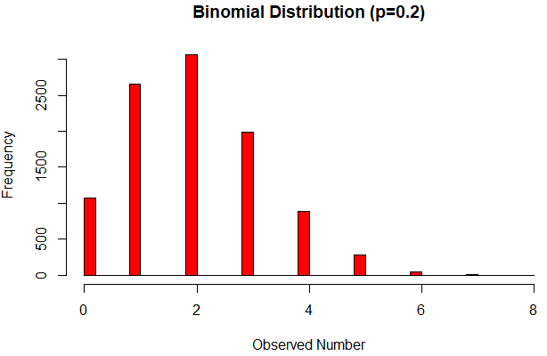

Bloque 1: Transición de Variables Aleatorias Discretas a Continuas
Revisión de Conceptos Claves
Hemos establecido que una Variable Aleatoria (VA) es una función que asigna un valor numérico a cada resultado posible de un experimento. Para describir el comportamiento de probabilidad de esta VA, utilizamos funciones de distribución.
Función de Masa de Probabilidad (FMP)
La FMP es la herramienta principal para describir una Variable Aleatoria Discreta.
Definición Formal: La Función de Masa de Probabilidad (FMP) de una VA discreta \(X\) es la función \(p_X(x)\) dada por:
Esto especifica la probabilidad de que \(X\) tome el valor exacto \(x\).
Intuición: La FMP es la "receta" que asigna una cantidad de probabilidad (o "masa") a cada posible resultado discreto. Para que sea válida, la suma de todas las masas de probabilidad debe ser exactamente \(1\).
Función de Distribución Acumulada (FDA)
La FDA es fundamental porque se define para cualquier tipo de VA (discreta o continua).
Definición Formal: La Función de Distribución Acumulada (FDA) de una VA \(X\) es la función \(F_X(x)\) dada por:
La FDA nos dice la probabilidad de que la variable \(X\) tome un valor menor o igual a \(x\).
Intuición: La FDA es la probabilidad acumulada hasta un punto dado \(x\). Para VA discretas, la CDF avanza a través de "saltos" en cada valor que tiene probabilidad positiva.
Variables Aleatorias Continuas y la Función de Densidad de Probabilidad (FDP)
Hasta ahora hemos trabajado con variables discretas, aquellas que toman valores contables, como \(\{0, 1, 2, ...\}\) \(9\) . Ahora pasamos a variables continuas, que pueden tomar cualquier valor real en un intervalo.
Diferencia entre Discreto y Continuo
| Aspecto | Variable Discreta | Variable Continua |
|---|---|---|
| Formal | Toma valores de una lista finita o contablemente infinita de valores \(a_j\). | Puede tomar cualquier valor real en un intervalo (ej. \((-\infty, \infty)\)). |
| Punto Clave | \(P(X = x) > 0\) para valores en el soporte. | \(P(X = x) = 0\) para cualquier valor \(x\) específico. |
| Intuición | Estamos contando elementos (ej. número de caras, número de defectos). La probabilidad se concentra en puntos específicos. | Estamos midiendo algo (ej. tiempo, longitud, peso). No podemos "acertar" un valor exacto; solo podemos medir la probabilidad de caer en un rango. |
Debido a que \(P(X = x) = 0\) para variables continuas, la FMP ya no es útil. Necesitamos una función que describa cómo se distribuye la probabilidad sobre un intervalo.
Función de Densidad de Probabilidad (FDP)
Para las VAs continuas, utilizamos la FDP.
Definición Formal: Para una VA continua \(X\) con FDA \(F\), la Función de Densidad de Probabilidad (FDP) es la derivada de la FDA:
Esto requiere que la CDF sea diferenciable.
Intuición: La PDF \(f(x)\) no es una probabilidad; es una densidad de probabilidad. Puede tomar valores mayores a \(1\).
Para obtener una probabilidad, debemos calcular el área bajo la curva de la FDP. La probabilidad de que \(X\) caiga en un rango \([a, b]\) se encuentra integrando la FDP en ese rango:
Si el intervalo es muy pequeño (longitud \(\epsilon\) alrededor de \(x_0\)), la probabilidad es aproximadamente \(f(x_0) \cdot \epsilon\). Esto refuerza la idea de que \(f(x)\) es la probabilidad por unidad de medida.
Criterios de Validez: Una PDF \(f(x)\) es válida si cumple dos criterios:
1. No Negativa: \(f(x) \ge 0\).
2. Integra a 1: \(\int_{-\infty}^{\infty} f(x)dx = 1\) (la probabilidad total bajo la curva debe ser \(1\)).
Comparación entre Distribuciones
3. Resumen Comparativo de Distribuciones
| Característica | Discreta | Continua |
|---|---|---|
| Función Descriptiva Principal | FMP: \(p_X(x) = P(X = x)\) | FDP:\(f(x) = F'(x)\) |
| Cálculo de Probabilidad | Sumar la FMP: \(P(X \in A) = \sum_{x \in A} p_X(x)\) | Integrar la FDP:\(P(X \in A) = \int_A f(x)dx\) |
| \(P(X=x)\) | Posiblemente \(> 0\) | Siempre \(0\) |
| FDA \(F(x) = P(X \le x)\) | Se obtiene sumando la P FMP. Función con saltos (tipo escalón). | Se obtiene integrando la FDP. Función suave y diferenciable. |
| Requisito de Validez | P FMP debe sumar a \(1\). | FDP debe integrar a \(1\). |
| Libertad con Endpoints | Importa si se usa \(<\) o \(\le\). | No importa si se incluye o excluye el punto: \(P(a < X < b) = P(a \le X \le b)\). |
Bloque 2: Distribuciones Discretas
Distribución Bernoulli
Definición: Una variable aleatoria \(X\) tiene la Distribución Bernoulli con parámetro \(p\) si describe el resultado de un único ensayo que puede resultar en uno de dos posibles resultados mutuamente excluyentes, etiquetados como "éxito" (\(X = 1\)) o "fracaso" (\(X = 0\)) \(1\) . La probabilidad de éxito es \(p\), y la probabilidad de fracaso es \(1 - p\) \(2\) \(3\) . Se denota como \(X \sim Bern(p)\).
Explicación Intuitiva y Ejemplo: La distribución Bernoulli es la base de muchas otras distribuciones discretas. Se utiliza para modelar cualquier evento simple de "sí o no". Por ejemplo, si lanzas una moneda solo una vez, y el éxito es obtener cara, la distribución del número de caras obtenidas en ese único lanzamiento es Bernoulli.
Función de Masa de Probabilidad (PMF):

Ejercicio 1: Identificación de Abogados
Escenario: Aproximadamente \(1\) de cada \(200\) adultos estadounidenses es abogado. Si seleccionamos al azar a un adulto, queremos modelar la distribución del número de abogados, \(X\), en nuestra muestra.
Desarrollo del Ejercicio:
1. Identificar la distribución y el parámetro: Dado que es un único ensayo con dos resultados posibles (es abogado/no es abogado), utilizamos la Distribución Bernoulli. El parámetro \(p\) es la probabilidad de éxito (ser abogado).
2. Calcular la FMP: El número de abogados, \(X\), solo puede ser \(0\) o \(1\).
-
Probabilidad de éxito (\(X = 1\)):
\[P(X = 1) = p = 1/200\] -
Probabilidad de fracaso (\(X = 0\)):
\[P(X = 0) = 1 - p = 1 - 1/200 = 199/200\]
3. Respuesta detallada: La función de masa de probabilidad es:
- \(P(X = 1) = 0.005\)
- \(P(X = 0) = 0.995\)
Distribución Uniforme Discreta
Definición: Una variable aleatoria \(X\) tiene la Distribución Uniforme Discreta si toma valores de un conjunto finito y no vacío de números \(C\), donde todos los valores en \(C\) son igualmente probables.
Explicación Intuitiva y Ejemplo: Esta distribución se aplica a experimentos en los que la selección es completamente aleatoria y cada resultado posible tiene la misma probabilidad. Las preguntas que involucran esta distribución se reducen a problemas de conteo.
Función de Masa de Probabilidad (PMF):

Ejercicio 2: Lanzamiento de un Dado Justo
Escenario: Se lanza un dado justo de seis caras. Sea \(X\) el resultado del lanzamiento. \(X\) sigue una Distribución Uniforme Discreta en \(C = \{1, 2, 3, 4, 5, 6\}\). Calcule la probabilidad de que \(X\) sea un número impar.
Desarrollo del Ejercicio:
1. Identificar el conjunto de soporte C y su tamaño |C|: El conjunto de resultados posibles es \(C = \{1, 2, 3, 4, 5, 6\}\). El tamaño del soporte es \(|C| = 6\).
2. Identificar el evento de interés A y su tamaño |A|: El evento \(A\) es que \(X\) sea un número impar, es decir, \(A = \{1, 3, 5\}\). El tamaño del evento es \(|A| = 3\).
3. Calcular la probabilidad: Para la Distribución Uniforme Discreta, la probabilidad de que \(X\) caiga en un subconjunto \(A\) de \(C\) es \(|A|/|C|\).
4. Respuesta detallada: La probabilidad de obtener un número impar es \(1/2\) o \(0.5\).
Distribución Binomial
Definición: Una variable aleatoria \(X\) tiene la Distribución Binomial si representa el número total de éxitos en \(n\) ensayos de Bernoulli independientes, donde la probabilidad de éxito \(p\) es constante en cada ensayo. Se denota como \(X \sim Bin(n, p)\).
Explicación Intuitiva y Ejemplo: Esta distribución surge en escenarios donde se repite un experimento de "éxito/fracaso" un número fijo de veces (\(n\)), y los resultados de cada repetición no influyen en los demás (independencia). Ejemplo: Si la probabilidad de que un hombre canadiense de \(90\) años sobreviva un año más es \(p = 0.82\), y seleccionamos \(20\) hombres aleatoriamente (\(n = 20\)), la distribución del número de sobrevivientes es Binomial.
Función de Masa de Probabilidad (PMF):

Ejercicio 3: Obtención de un Número Específico en Dados
Escenario: Se lanza un dado equilibrado de seis caras tres veces (\(n = 3\)). Calcule la probabilidad de que se obtenga un \(5\) exactamente dos veces.
Desarrollo del Ejercicio:
1. Identificar la distribución y parámetros: Aunque el dado tiene seis caras, definimos el "éxito" como obtener un \(5\) (lo que nos interesa contar), y el "fracaso" como obtener cualquier otra cosa.
- Número de ensayos (\(n\)): \(3\).
- Probabilidad de éxito (\(p\)): \(P(\text{obtener un } 5) = 1/6\).
- Probabilidad de fracaso (\(1 - p\)): \(1 - 1/6 = 5/6\).
- Valor de \(x\) (número de éxitos deseado): \(x = 2\).
- \(X \sim Bin(3, 1/6)\).
2. Aplicar la fórmula Binomial:
3. Realizar el cálculo:
- El coeficiente binomial \(\binom{3}{2}\) (el número de formas de obtener \(2\) éxitos en \(3\) ensayos) es \(3\).
- \(P(\text{éxito})^2 = (1/6)^2 = 1/36\).
- \(P(\text{fracaso})^1 = (5/6)^1 = 5/6\).
Convirtiendo a decimales:
4. Respuesta detallada: La probabilidad de obtener un \(5\) exactamente dos veces es \(0.0694\) (redondeado a cuatro decimales).
Distribución Geométrica
Definición: La Distribución Geométrica modela el número de ensayos necesarios (\(X\)) para obtener el primer éxito en una secuencia de ensayos de Bernoulli independientes.
Explicación Intuitiva y Ejemplo: Se utiliza para calcular la "espera" hasta que ocurre un evento deseado por primera vez. Para que el primer éxito ocurra en el ensayo \(X\), se requiere que los \(X - 1\) ensayos anteriores hayan sido fallas, seguidos por un éxito en el ensayo \(X\). Ejemplo: Si estás buscando a alguien que sepa RCP, la distribución del número de personas que tienes que preguntar hasta encontrar a la primera que sabe RCP es geométrica.
Función de Masa de Probabilidad (PMF):
Ejercicio 4: Espera por el Primer Rojo en la Ruleta
Escenario: Una ruleta europea tiene \(18\) ranuras rojas, \(18\) negras y \(1\) verde (\(37\) ranuras en total). Asumiendo que la bola tiene la misma probabilidad de caer en cualquiera de las \(37\) ranuras, calcule la probabilidad de que la primera vez que la bola caiga en una ranura roja ocurra exactamente en el \(5.^\circ\) giro.
Desarrollo del Ejercicio:
1. Identificar la distribución y el parámetro: Estamos interesados en el número de giros necesarios para el primer éxito (caer en rojo), por lo tanto, usamos la Distribución Geométrica.
- Probabilidad de éxito (\(p\)): \(18/37\) (\(18\) ranuras rojas de \(37\) totales).
- Probabilidad de fracaso (\(1 - p\)): \(1 - 18/37 = 19/37\).
- Valor de \(x\) (giro donde ocurre el primer éxito): \(x = 5\).
2. Aplicar la fórmula Geométrica: Necesitamos \(4\) fracasos consecutivos, seguidos de \(1\) éxito.
3. Realizar el cálculo:
- \(P(\text{fracaso})^4 = (19/37)^4 \approx 0.06979\)
- \(P(\text{éxito}) = 18/37 \approx 0.48649\) \(\(P(X = 5) \approx 0.06979 \times 0.48649 \approx 0.03395\)\) Redondeando a cuatro decimales, el resultado es \(0.0338\).
4. Respuesta detallada: La probabilidad de que la primera ranura roja ocurra exactamente en el \(5.^\circ\) giro es \(0.0338\).
Distribución Poisson
Definición: Una variable aleatoria \(X\) tiene la Distribución Poisson si es un recuento del número de ocurrencias de un evento en una unidad fija de tiempo, distancia, área o volumen. Se requiere que los eventos ocurran de manera aleatoria e independiente, y que la tasa teórica (\(\lambda\), la media de ocurrencias) se mantenga constante.
Explicación Intuitiva y Ejemplo: La Poisson es extremadamente útil como modelo para datos de conteo. Es una excelente aproximación a la distribución Binomial cuando el número de ensayos \(n\) es muy grande y la probabilidad de éxito \(p\) es muy pequeña, manteniendo su producto \(\lambda = np\) constante. Ejemplo: Contar el número de desintegraciones radiactivas por segundo en una muestra de plutonio, ya que hay un número gigantesco de átomos (\(n\) muy grande) y una probabilidad minúscula (\(p\) muy pequeña) de que un átomo decaiga en un segundo.
Función de Masa de Probabilidad (PMF):
Ejercicio 5: Conteo de Partículas de Oro en una Bebida
Escenario: Un fabricante de bebidas agrega escamas de oro a sus botellas a una tasa promedio de \(800\) escamas por botella de un litro. Se toma una muestra de diez mililitros (ml) de una botella. Calcule la probabilidad de que esta muestra contenga exactamente \(2\) escamas de oro.
Desarrollo del Ejercicio:
1. Determinar la tasa \lambda (media de ocurrencias) para la unidad de interés: La unidad de interés es la muestra de \(10\) ml. La tasa promedio es de \(800\) escamas por \(1,000\) ml (\(1\) litro). La muestra de \(10\) ml representa \(10/1000 = 1/100\) del volumen total.
2. Identificar la distribución y parámetros: Asumiendo que las escamas están distribuidas aleatoria e independientemente, \(X\) (número de escamas) sigue una distribución Poisson con \(\lambda = 8\). Buscamos \(P(X = 2)\).
3. Aplicar la fórmula Poisson:
4. Realizar el cálculo:
5. Respuesta detallada: La probabilidad de que la muestra de \(10\) ml contenga exactamente \(2\) escamas de oro es aproximadamente \(0.0107\) (redondeado a cuatro decimales).